Final pitch deck
Customer-anonymized reading copy of the supplied final HTML: 10 main slides, appendix divider and 7 appendix slides. Customer names and logos are replaced; animation/video states are captured as stills. The original submission is retained privately. Evidence qualifications are in the summary.
1 · PDF page 1
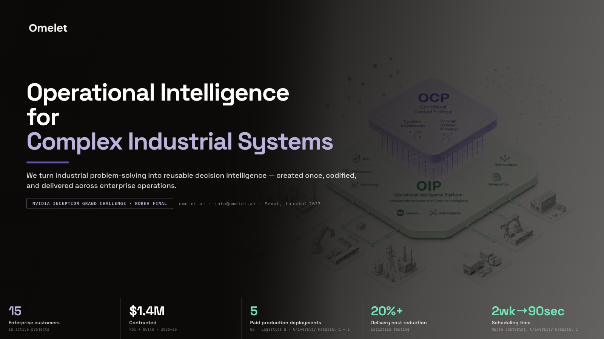
Slide text
Operational Intelligencefor Complex Industrial Systems We turn industrial problem-solving into reusable decision intelligence — created once, codified, and delivered across enterprise operations. NVIDIA INCEPTION GRAND CHALLENGE · KOREA FINAL omelet.ai · info@omelet.ai · Seoul, founded 2023 15Enterprise customers18 active projects $1.4MContractedPoC + build · 2025–26 5Paid production deploymentsGS · Logistics B · University Hospital C + 2 20%+Delivery cost reductionLogistics routing 2wk→90secScheduling timeNurse rostering, University Hospital C
2 · PDF page 2
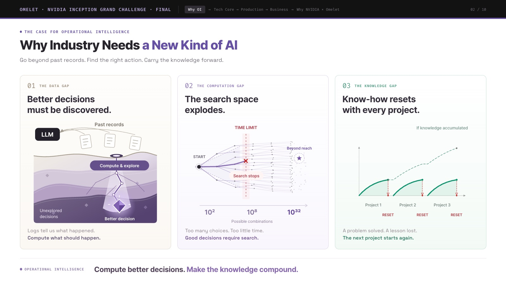
Slide text
OMELET · NVIDIA INCEPTION GRAND CHALLENGE · FINALWhy OI→Tech Core → Production → Business→Why NVIDIA × Omelet02 / 10 THE CASE FOR OPERATIONAL INTELLIGENCEWhy Industry Needs a New Kind of AIGo beyond past records. Find the right action. Carry the knowledge forward. 01THE DATA GAP Better decisionsmust be discovered. LLM Past records Compute & explore Unexplored decisions Better decision Logs tell us what happened.Compute what should happen. 02THE COMPUTATION GAP The search spaceexplodes. TIME LIMIT START Beyond reach Search stops 10² 10⁸ 10³² Possible combinations Too many choices. Too little time.Good decisions require search. 03THE KNOWLEDGE GAP Know-how resetswith every project. If knowledge accumulated Project 1Project 2Project 3RESETRESETRESET A problem solved. A lesson lost.The next project starts again. OPERATIONAL INTELLIGENCECompute better decisions. Make the knowledge compound.
3 · PDF page 3
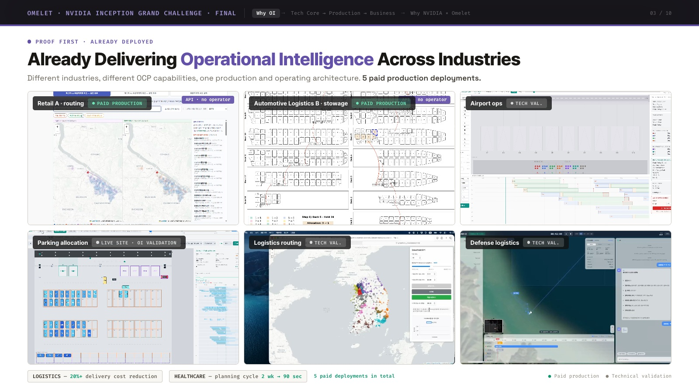
Slide text
Omelet · NVIDIA Inception Grand Challenge · FinalWhy OI→Tech Core → Production → Business→Why NVIDIA × Omelet Proof first · already deployed Already Delivering Operational Intelligence Across Industries Different industries, different OCP capabilities, one production and operating architecture. 5 paid production deployments. API · no operator Retail A · routingPaid production API · no operator Automotive Logistics B · stowagePaid production Airport opsTech val. Parking allocationLive site · OI validation Logistics routingTech val. Defense logisticsTech val. LOGISTICS — 20%+ delivery cost reductionHEALTHCARE — planning cycle 2 wk → 90 sec5 paid deployments in total ● Paid production● Technical validation The patternSame structural failure. Recurring cost pattern across industries. Enterprises independently brought us decisions that were manual, heuristic, or rebuilt project-by-project — repeatedly creating expert-labor cost, long planning cycles and operational inefficiency.
4 · PDF page 4
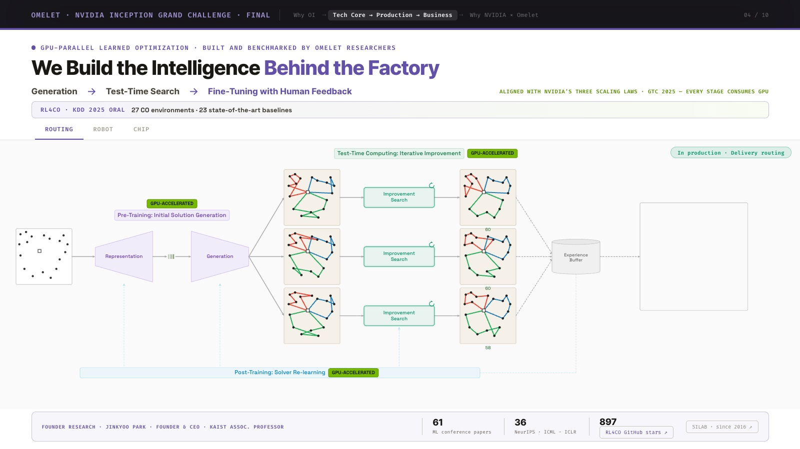
Slide text
Omelet · NVIDIA Inception Grand Challenge · FinalWhy OI→Tech Core → Production → Business→Why NVIDIA × Omelet GPU-parallel learned optimization · built and benchmarked by Omelet researchersWe Build the Intelligence Behind the FactoryGeneration→Test-Time Search→Fine-Tuning with Human FeedbackALIGNED WITH NVIDIA’S THREE SCALING LAWS · GTC 2025 — EVERY STAGE CONSUMES GPU RL4CO · KDD 2025 ORAL27 CO environments · 23 state-of-the-art baselines RoutingRobotChip COMMERCIAL PROOFCase 1 of 3 · Vehicle routing — paid production: improvement search refines delivery routes in real time In production · Delivery routing Solver capability · research Solver capability · research Founder Research · Jinkyoo Park · Founder & CEO · KAIST Assoc. ProfessorBuilt on a decade of AI-powered optimization research — RL4CO · PARCO61ML conference papers36NeurIPS · ICML · ICLR897RL4CO GitHub stars ↗SILAB · since 2016 ↗
5 · PDF page 5

Slide text
Omelet · NVIDIA Inception Grand Challenge · FinalWhy OI→Tech Core → Production → Business→Why NVIDIA × Omelet From foundation model to deployable applicationsOne Intelligence Factory, Many Industrial ApplicationsFoundation creates the intelligence · OCP Server makes it reusable · OIP makes it operable. OIPOperational Intelligence PlatformDeploy · Connect · Monitor · GovernSecure · Evaluate · Remember · ImproveOne platform ·every OCP ·one substrate Optimization AIFoundation ModelProblem-ClassSolver APIsDomain-SpecificOCP ServersOIApplicationsFoundation ModelRoutingSolverSchedulingSolverPackagingSolverInventory ControlSolverTMSOCP ServerDeliveryOCP ServerCrew SchedulingOCP ServerNurse SchedulingOCP ServerStowage PlanningOCP Server3D Bin-PackingOCP ServerRetail InventoryOCP ServerDemand PredictionOCP Server Foundation / Test-Time Search→CUDA® INTEGRATINGSelected Solver APIs→NVIDIA cuOpt™ INTEGRATINGPhysical OI Validation→NVIDIA Isaac Sim™ NEXT PHASEOne integration at the Factory level propagates into many industrial applications.
6 · PDF page 6
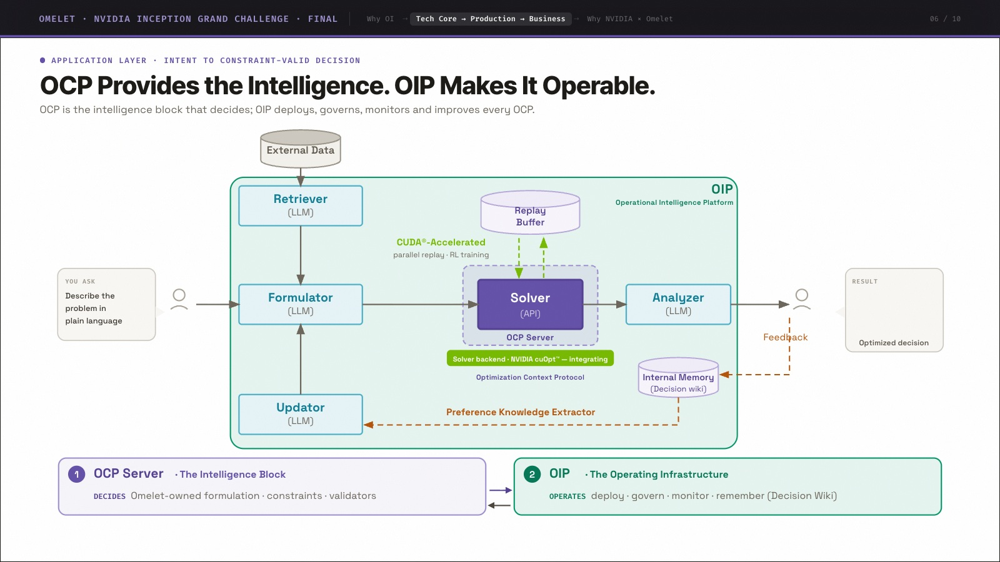
Slide text
Omelet · NVIDIA Inception Grand Challenge · FinalWhy OI→Tech Core → Production → Business→Why NVIDIA × Omelet Application layer · intent to constraint-valid decisionOCP Provides the Intelligence. OIP Makes It Operable.OCP is the intelligence block that decides; OIP deploys, governs, monitors and improves every OCP. OIP Operational Intelligence Platform External Data Retriever (LLM) Replay Buffer Formulator (LLM) Routing (API) OCP Server Solver backend · NVIDIA cuOpt™ — integratingOptimization Context Protocol Analyzer (LLM) Updator (LLM) Internal Memory (Decision wiki) YOU ASK Plan routes that minimize fuel cost RESULT Optimized route map CUDA®-Acceleratedparallel replay · RL training Feedback Preference Knowledge Extractor 1 OCP Server · The Intelligence Block DECIDES Omelet-owned formulation · constraints · validators 2 OIP · The Operating Infrastructure OPERATES deploy · govern · monitor · remember (Decision Wiki)
7 · PDF page 7
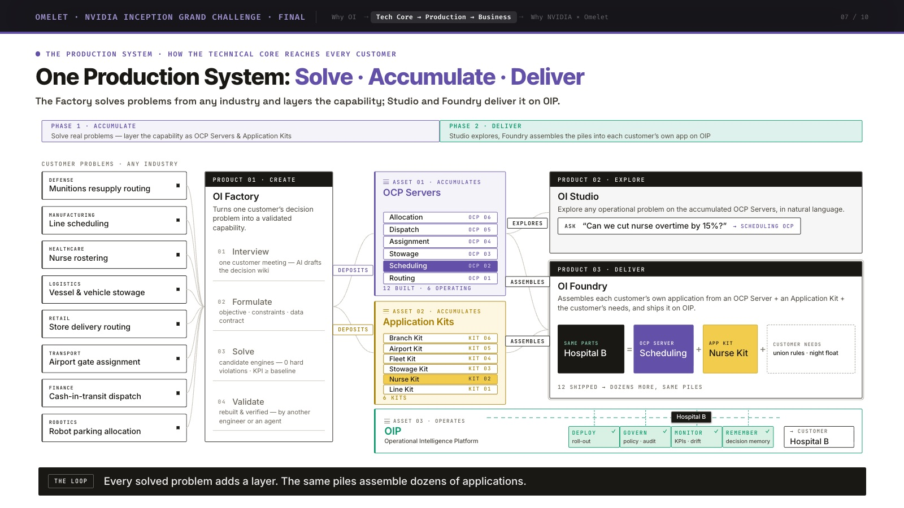
Slide text
Omelet · NVIDIA Inception Grand Challenge · FinalWhy OI→Tech Core → Production → Business→Why NVIDIA × Omelet The production system · how the technical core reaches every customer One Production System: Solve · Accumulate · Deliver The Factory solves problems from any industry and layers the capability; Studio and Foundry deliver it on OIP. Phase 1 · AccumulateSolve real problems — layer the capability as OCP Servers & Application KitsPhase 2 · DeliverStudio explores, Foundry assembles the piles into each customer’s own app on OIP depositsdepositsexploresassemblesassembles Customer problems · any industry DEFENSEMunitions resupply routingMANUFACTURINGLine schedulingHEALTHCARENurse rosteringLOGISTICSVessel & vehicle stowageRETAILStore delivery routingTRANSPORTAirport gate assignmentFINANCECash-in-transit dispatchROBOTICSRobot parking allocation PRODUCT 01 · CREATEOI FactoryTurns one customer’s decision problem into a validated capability.01Interviewone customer meeting — AI drafts the decision wiki02Formulateobjective · constraints · data contract03Solvecandidate engines — 0 hard violations · KPI ≥ baseline04Validaterebuilt & verified — by another engineer or an agent ASSET 01 · ACCUMULATESOCP ServersRoutingOCP 01SchedulingOCP 02StowageOCP 03AssignmentOCP 04DispatchOCP 05AllocationOCP 060 BUILT ASSET 02 · ACCUMULATESApplication KitsLine KitKIT 01Nurse KitKIT 02Stowage KitKIT 03Fleet KitKIT 04Airport KitKIT 05Branch KitKIT 060 KITS ASSET 03 · OPERATESOIPOperational Intelligence PlatformDeployroll-outGovernpolicy · auditMonitorKPIs · driftRememberdecision memory→ Customer— PRODUCT 02 · EXPLOREOI StudioExplore any operational problem on the accumulated OCP Servers, in natural language.ASK“Can we cut nurse overtime by 15%?”→ SCHEDULING OCP PRODUCT 03 · DELIVEROI FoundryAssembles each customer’s own application from an OCP Server + an Application Kit + the customer’s needs, and ships it on OIP.Own app—=OCP Server—+App Kit—+Customer needs—01Register parts02Assemble03Configure04Test05Ship on OIP0 APPS SHIPPED OI FACTORYInterviews, formulates, solves and validates the customer’s decision problem. Any industry.
8 · PDF page 8
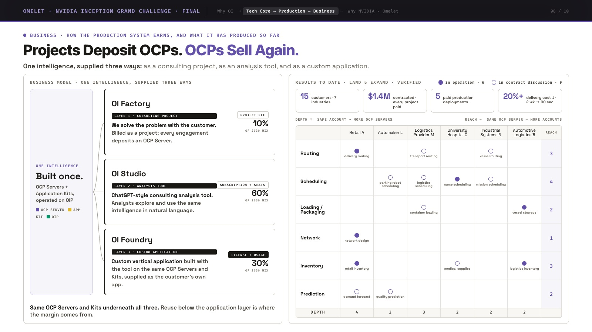
Slide text
Omelet · NVIDIA Inception Grand Challenge · FinalWhy OI→Tech Core → Production → Business→Why NVIDIA × Omelet Business · how the production system earns, and what it has produced so far Projects Deposit OCPs. OCPs Sell Again. One intelligence, supplied three ways: as a consulting project, as an analysis tool, and as a custom application. BUSINESS MODEL · ONE INTELLIGENCE, SUPPLIED THREE WAYS ONE INTELLIGENCEBuilt once.OCP Servers + Application Kits, operated on OIPOCP ServerApp KitOIP OI FactoryLAYER 1 · CONSULTING PROJECTWe solve the problem with the customer. Billed as a project; every engagement deposits an OCP Server.PROJECT FEE10%OF 2030 MIX OI StudioLAYER 2 · ANALYSIS TOOLChatGPT-style consulting analysis tool. Analysts explore and use the same intelligence in natural language.SUBSCRIPTION + SEATS60%OF 2030 MIX OI FoundryLAYER 3 · CUSTOM APPLICATIONCustom vertical application built with the tool on the same OCP Servers and Kits, supplied as the customer’s own app.LICENSE + USAGE30%OF 2030 MIX Same OCP Servers and Kits underneath all three. Reuse below the application layer is where the margin comes from. RESULTS TO DATE · LAND & EXPAND · VERIFIEDin operation · 6 in contract discussion · 9 15customers · 7 industries$1.4Mcontracted · every project paid5paid production deployments20%+delivery cost ↓ · 2 wk → 90 sec DEPTH ↑ SAME ACCOUNT → MORE OCP SERVERSREACH → SAME OCP SERVER → MORE ACCOUNTS REACHRoutingdelivery routingtransport routingvessel routing3Schedulingparking robot schedulinglogistics schedulingnurse schedulingmission scheduling4Loading /Packagingcontainer loadingvessel stowage2Networknetwork design1Inventoryretail inventorymedical supplieslogistics inventory3Predictiondemand forecastquality prediction2DEPTH423222
9 · PDF page 9
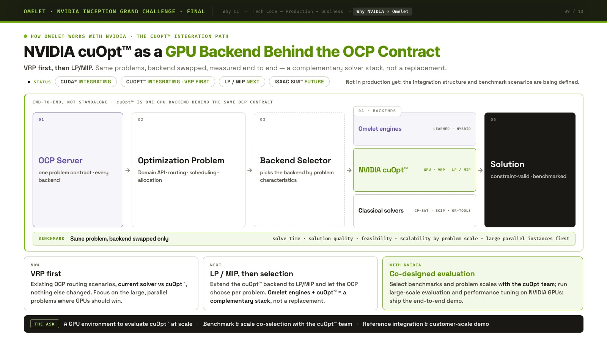
Slide text
Omelet · NVIDIA Inception Grand Challenge · FinalWhy OI→Tech Core → Production → Business→Why NVIDIA × Omelet How Omelet works with NVIDIA · the cuOpt™ integration path NVIDIA cuOpt™ as a GPU Backend Behind the OCP Contract VRP first, then LP/MIP. Same problems, backend swapped, measured end to end — a complementary solver stack, not a replacement. STATUSCUDA® integratingcuOpt™ integrating · VRP firstLP / MIP nextIsaac Sim™ futureNot in production yet: the integration structure and benchmark scenarios are being defined. END-TO-END, NOT STANDALONE · cuOpt™ IS ONE GPU BACKEND BEHIND THE SAME OCP CONTRACT 01OCP Serverone problem contract · every backend→ 02Optimization ProblemDomain API · routing · scheduling · allocation→ 03Backend Selectorpicks the backend by problem characteristics→ 04 · BACKENDSOmelet enginesLEARNED · HYBRIDNVIDIA cuOpt™GPU · VRP → LP / MIPClassical solversCP-SAT · SCIP · OR-TOOLS→ 05Solutionconstraint-valid · benchmarked BENCHMARKSame problem, backend swapped onlysolve time · solution quality · feasibility · scalability by problem scale · large parallel instances first NOWVRP firstExisting OCP routing scenarios, current solver vs cuOpt™, nothing else changed. Focus on the large, parallel problems where GPUs should win. NEXTLP / MIP, then selectionExtend the cuOpt™ backend to LP/MIP and let the OCP choose per problem. Omelet engines + cuOpt™ = a complementary stack, not a replacement. WITH NVIDIACo-designed evaluationSelect benchmarks and problem scales with the cuOpt team; run large-scale evaluation and performance tuning on NVIDIA GPUs; ship the end-to-end demo. THE ASKA GPU environment to evaluate cuOpt™ at scale·Benchmark & scale co-selection with the cuOpt™ team·Reference integration & customer-scale demo
10 · PDF page 10
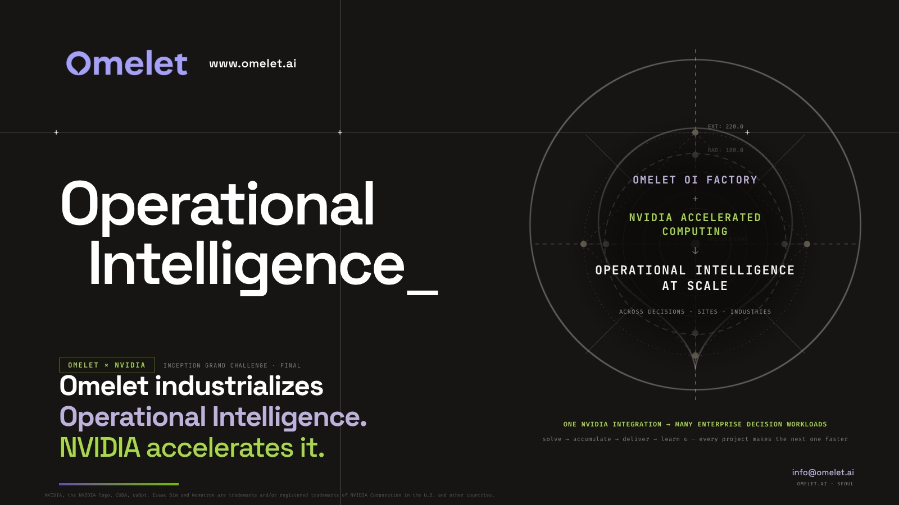
Slide text
+++ +++ EXT: 220.0 RAD: 180.0 OML-SYS-CORE www.omelet.ai Operational Intelligence_ OMELET × NVIDIAINCEPTION GRAND CHALLENGE · FINAL Omelet industrializesOperational Intelligence.NVIDIA accelerates it. ONE NVIDIA INTEGRATION → MANY ENTERPRISE DECISION WORKLOADS solve → accumulate → deliver → learn ↻ — every project makes the next one faster OMELET OI FACTORY+NVIDIA ACCELERATEDCOMPUTING↓OPERATIONAL INTELLIGENCEAT SCALEACROSS DECISIONS · SITES · INDUSTRIES info@omelet.aiOMELET.AI · SEOUL NVIDIA, the NVIDIA logo, CUDA, cuOpt, Isaac Sim and Nemotron are trademarks and/or registered trademarks of NVIDIA Corporation in the U.S. and other countries.
Appendix · PDF page 11
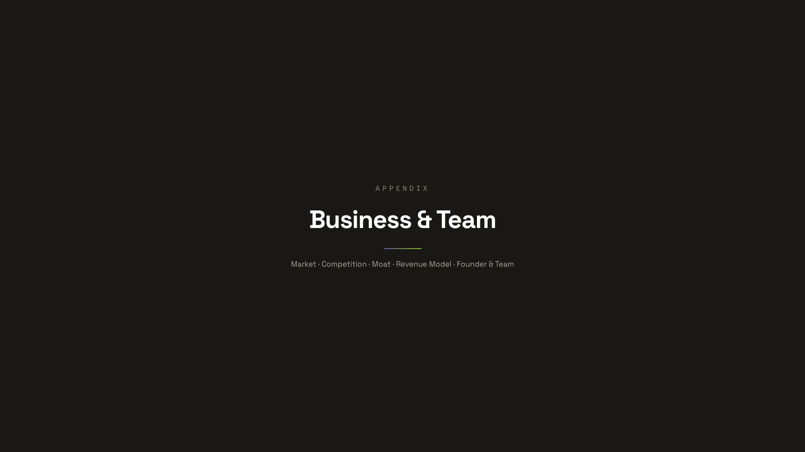
Slide text
APPENDIX Business & Team Market · Competition · Moat · Revenue Model · Founder & Team
A1 · PDF page 12
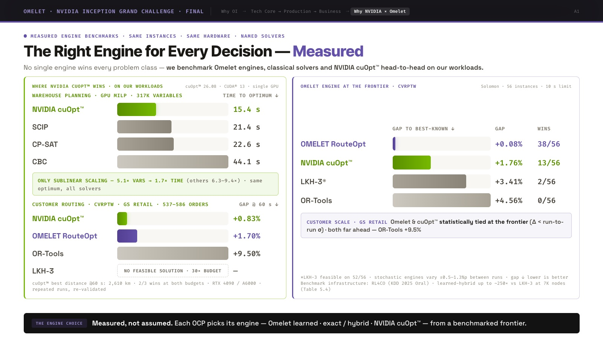
Slide text
Omelet · NVIDIA Inception Grand Challenge · FinalWhy OI→Tech Core → Production → Business→Why NVIDIA × Omelet Measured engine benchmarks · same instances · same hardware · named solvers The Right Engine for Every Decision — Measured No single engine wins every problem class — we benchmark Omelet engines, classical solvers and NVIDIA cuOpt™ head-to-head on our workloads. WHERE NVIDIA cuOpt™ WINS · ON OUR WORKLOADScuOpt™ 26.08 · CUDA® 13 · single GPU WAREHOUSE PLANNING · GPU MILP · 317K VARIABLES TIME TO OPTIMUM ↓ NVIDIA cuOpt™ 15.4 s SCIP 21.4 s CP-SAT 22.6 s CBC 44.1 s ONLY SUBLINEAR SCALING — 5.1× VARS → 1.7× TIME (others 6.3–9.4×) · same optimum, all solvers CUSTOMER ROUTING · CVRPTW · Retail A · 537–586 ORDERS GAP @ 60 s ↓ NVIDIA cuOpt™ +0.83% OMELET RouteOpt +1.70% OR-Tools +9.50% LKH-3 NO FEASIBLE SOLUTION · 30× BUDGET — cuOpt™ best distance @60 s: 2,610 km · 2/3 wins at both budgets · RTX 4090 / A6000 · repeated runs, re-validated OMELET ENGINE AT THE FRONTIER · CVRPTWSolomon · 56 instances · 10 s limit GAP TO BEST-KNOWN ↓ GAP WINS OMELET RouteOpt +0.08% 38/56 NVIDIA cuOpt™ +1.76% 13/56 LKH-3* +3.41% 2/56 OR-Tools +4.56% 0/56 CUSTOMER SCALE · Retail A Omelet & cuOpt™ statistically tied at the frontier (Δ < run-to-run σ) · both far ahead — OR-Tools +9.5% *LKH-3 feasible on 52/56 · stochastic engines vary ±0.5–1.3%p between runs · gap ↓ lower is better Benchmark infrastructure: RL4CO (KDD 2025 Oral) · learned-hybrid up to ~250× vs LKH-3 at 7K nodes (Table 5.4) The engine choiceMeasured, not assumed. Each OCP picks its engine — Omelet learned · exact / hybrid · NVIDIA cuOpt™ — from a benchmarked frontier.
A2 · PDF page 13
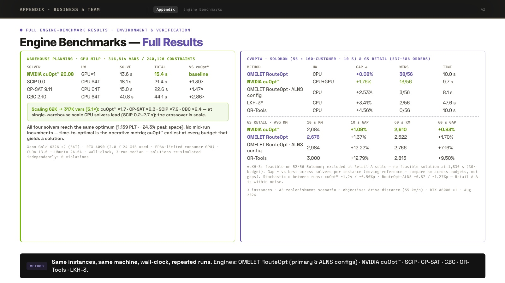
Slide text
Appendix · Business & TeamAppendix·Engine Benchmarks Full engine-benchmark results · environment & verification Engine Benchmarks — Full Results WAREHOUSE PLANNING · GPU MILP · 316,814 VARS / 240,120 CONSTRAINTS SOLVERHWSOLVETOTALVS cuOpt™ NVIDIA cuOpt™ 26.08GPU×113.6 s15.4 sbaseline SCIP 9.0CPU 64T18.1 s21.4 s+1.39× CP-SAT 9.11CPU 64T15.0 s22.6 s+1.47× CBC 2.10CPU 64T40.8 s44.1 s+2.86× Scaling 62K → 317K vars (5.1×): cuOpt™ ×1.7 · CP-SAT ×6.3 · SCIP ×7.9 · CBC ×9.4 — at single-warehouse scale CPU solvers lead (SCIP 0.2–2.7 s); the crossover is scale. All four solvers reach the same optimum (1,139 PLT · −24.3% peak space). No mid-run incumbents — time-to-optimal is the operative metric; cuOpt™ earliest at every budget that yields a solution. Xeon Gold 6326 ×2 (64T) · RTX 4090 (2.0 / 24 GiB used · FP64-limited consumer GPU) · CUDA 13.0 · Ubuntu 24.04 · wall-clock, 3-run median · solutions re-simulated independently: 0 violations CVRPTW · SOLOMON (56 × 100-CUSTOMER · 10 s) & Retail A (537–586 ORDERS) METHODHWGAP ↓WINSTIME OMELET RouteOptCPU+0.08%38/5610.0 s NVIDIA cuOpt™CPU+GPU+1.76%13/569.7 s OMELET RouteOpt · ALNS configCPU+2.53%3/568.1 s LKH-3*CPU+3.41%2/5647.6 s OR-ToolsCPU+4.56%0/5610.0 s Retail A · AVG KM10 s KM10 s GAP60 s KM60 s GAP NVIDIA cuOpt™2,684+1.09%2,610+0.83% OMELET RouteOpt2,676+1.37%2,622+1.70% OMELET RouteOpt · ALNS config2,984+12.22%2,766+7.16% OR-Tools3,000+12.79%2,815+9.50% *LKH-3: feasible on 52/56 Solomon; excluded at Retail A scale — no feasible solution at 1,830 s (30× budget). Gap = vs best across solvers per instance (moving reference — compare km across budgets, not gaps). Stochastic σ between runs: cuOpt™ ±1.24 / ±0.50%p · RouteOpt-ALNS ±0.87 / ±1.27%p — Retail A Δ is within noise. 3 instances · A3 replenishment scenario · objective: drive distance (55 km/h) · RTX A6000 ×1 · Aug 2026 MethodSame instances, same machine, wall-clock, repeated runs. Engines: OMELET RouteOpt (primary & ALNS configs) · NVIDIA cuOpt™ · SCIP · CP-SAT · CBC · OR-Tools · LKH-3.
A3 · PDF page 14
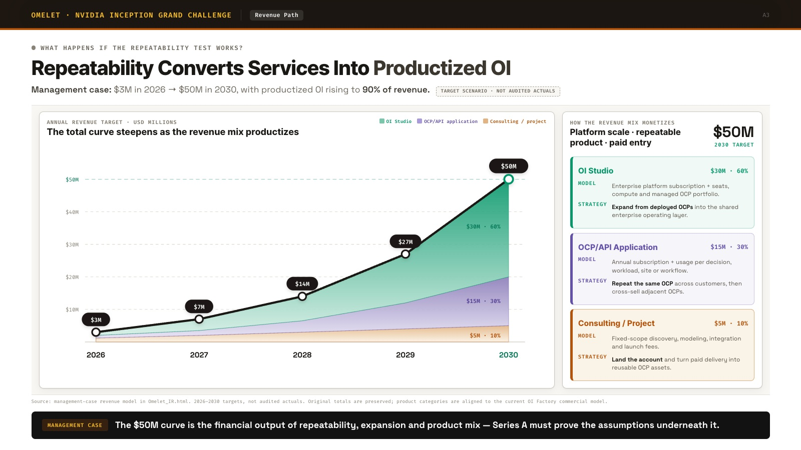
Slide text
Omelet · NVIDIA Inception Grand ChallengeRevenue Path What happens if the repeatability test works? Repeatability Converts Services Into Productized OI Management case: $3M in 2026 → $50M in 2030, with productized OI rising to 90% of revenue. Target scenario · not audited actuals Annual revenue target · USD millions The total curve steepens as the revenue mix productizes OI Studio OCP/API application Consulting / project $10M $20M $30M $40M $50M $3M $7M $14M $27M $50M 20262027202820292030 $30M · 60% $15M · 30% $5M · 10% How the revenue mix monetizesPlatform scale · repeatable product · paid entry $50M2030 TARGET OI Studio $30M · 60% MODELEnterprise platform subscription + seats, compute and managed OCP portfolio. STRATEGYExpand from deployed OCPs into the shared enterprise operating layer. OCP/API Application $15M · 30% MODELAnnual subscription + usage per decision, workload, site or workflow. STRATEGYRepeat the same OCP across customers, then cross-sell adjacent OCPs. Consulting / Project $5M · 10% MODELFixed-scope discovery, modeling, integration and launch fees. STRATEGYLand the account and turn paid delivery into reusable OCP assets. Source: management-case revenue model in Omelet_IR.html. 2026–2030 targets, not audited actuals. Original totals are preserved; product categories are aligned to the current OI Factory commercial model. Management caseThe $50M curve is the financial output of repeatability, expansion and product mix — Series A must prove the assumptions underneath it.
A4 · PDF page 15
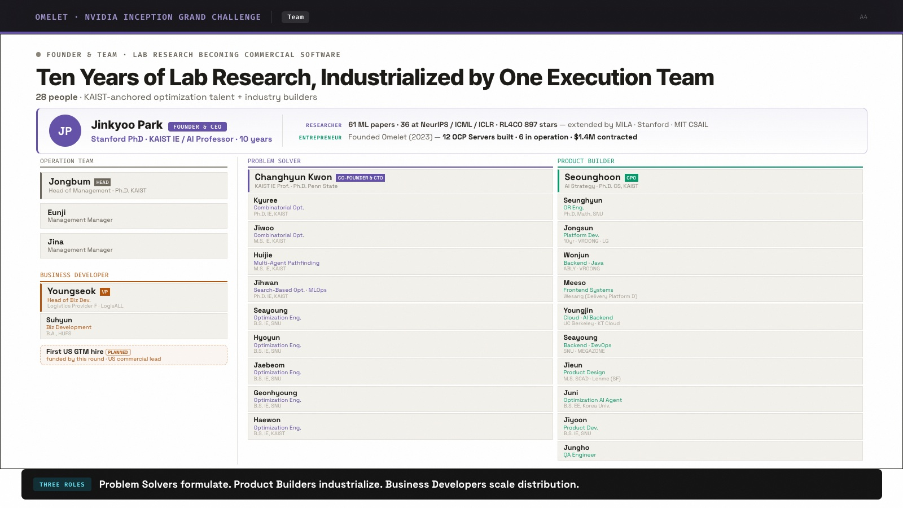
Slide text
Omelet · NVIDIA Inception Grand ChallengeTeam Founder & team · lab research becoming commercial softwareTen Years of Lab Research, Industrialized by One Execution Team28 people · KAIST-anchored optimization talent + industry builders JP Jinkyoo Park FOUNDER & CEO StanAutomaker G PhD · KAIST IE / AI Professor · 10 years RESEARCHER 61 ML papers · 36 at NeurIPS / ICML / ICLR · RL4CO 897 stars — extended by MILA · StanAutomaker G · MIT CSAIL ENTREPRENEUR Founded Omelet (2023) — 12 OCP Servers built · 6 in operation · $1.4M contracted OPERATION TEAM Jongbum HEAD Head of Management · Ph.D. KAIST EunjiManagement Manager JinaManagement Manager BUSINESS DEVELOPER Youngseok VPHead of Biz Dev.Logistics Provider F · LogisALL SuhyunBiz DevelopmentB.A., HUFSFirst US GTM hire PLANNEDfunded by this round · US commercial lead PROBLEM SOLVER Changhyun Kwon CO-FOUNDER & CTO KAIST IE Prof. · Ph.D. Penn State KyureeCombinatorial Opt.Ph.D. IE, KAIST JiwooCombinatorial Opt.M.S. IE, KAIST HuijieMulti-Agent PathfindingM.S. IE, KAIST JihwanSearch-Based Opt. · MLOpsPh.D. IE, KAIST SeayoungOptimization Eng.B.S. IE, SNU HyoyunOptimization Eng.B.S. IE, SNU JaebeomOptimization Eng.B.S. IE, SNU GeonhyoungOptimization Eng.B.S. IE, SNU HaewonOptimization Eng.B.S. IE, KAIST PRODUCT BUILDER Seounghoon CPO AI Strategy · Ph.D. CS, KAIST SeunghyunOR Eng.Ph.D. Math, SNU JongsunPlatform Dev.10yr · VROONG · LG WonjunBackend · JavaABLY · VROONG MeesoFrontend SystemsWesang (Delivery Platform D) YoungjinCloud · AI BackendUC Berkeley · KT Cloud SeayoungBackend · DevOpsSNU · MEGAZONE JieunProduct DesignM.S. SCAD · Lenme (SF) JuniOptimization AI AgentB.S. EE, Korea Univ. JiyoonProduct Dev.B.S. IE, SNU JunghoQA Engineer Three rolesProblem Solvers formulate. Product Builders industrialize. Business Developers scale distribution.
A5 · PDF page 16
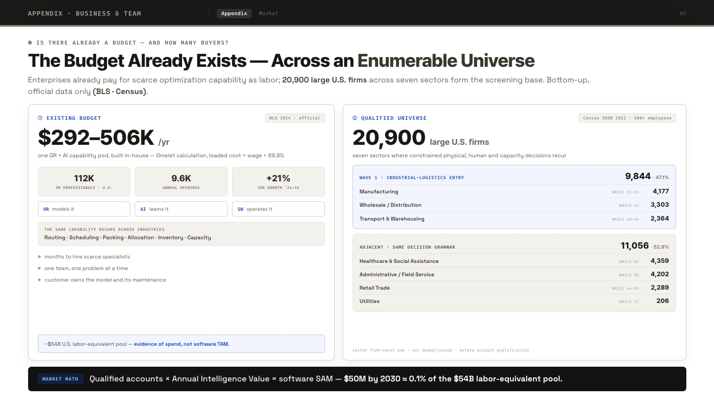
Slide text
Appendix · Business & TeamAppendix·Market Is there already a budget — and how many buyers? The Budget Already Exists — Across an Enumerable Universe Enterprises already pay for scarce optimization capability as labor; 20,900 large U.S. firms across seven sectors form the screening base. Bottom-up, official data only (BLS · Census). ① Existing budgetBLS 2024 · official $292–506K /yr one OR + AI capability pod, built in-house — Omelet calculation, loaded cost = wage ÷ 69.9% 112KOR professionals · U.S. 9.6Kannual openings +21%job growth ’24–34 ORmodels it AIlearns it SWoperates it The same capability recurs across industries Routing · Scheduling · Packing · Allocation · Inventory · Capacity months to hire scarce specialists one team, one problem at a time customer owns the model and its maintenance ~$54B U.S. labor-equivalent pool — evidence of spend, not software TAM. ② Qualified universeCensus SUSB 2022 · 500+ employees 20,900 large U.S. firms seven sectors where constrained physical, human and capacity decisions recur Wave 1 · industrial-logistics entry9,844 · 47.1% ManufacturingNAICS 31–334,177 Wholesale / DistributionNAICS 423,303 Transport & WarehousingNAICS 48–492,364 Adjacent · same decision grammar11,056 · 52.9% Healthcare & Social AssistanceNAICS 624,359 Administrative / Field ServiceNAICS 564,202 Retail TradeNAICS 44–452,289 UtilitiesNAICS 22206 sector firm-count sum · not deduplicated · before account qualification Market mathQualified accounts × Annual Intelligence Value = software SAM — $50M by 2030 ≈ 0.1% of the $54B labor-equivalent pool.
A6 · PDF page 17
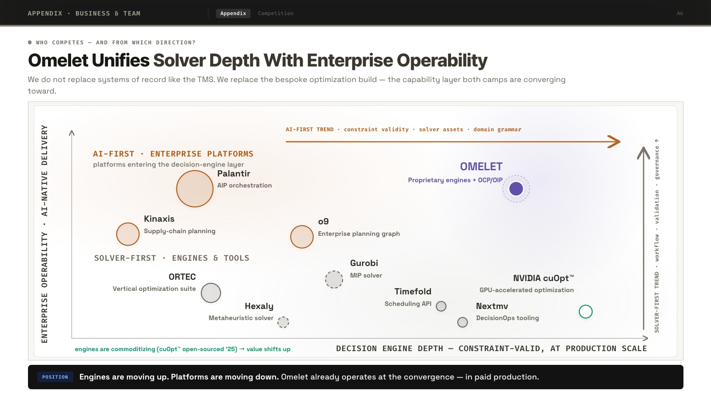
Slide text
Appendix · Business & TeamAppendix·Competition Who competes — and from which direction? Omelet Unifies Solver Depth With Enterprise Operability We do not replace systems of record like the TMS. We replace the bespoke optimization build — the capability layer both camps are converging toward. MUST BUILD — THE ENGINE GAPconstraint validity · solver assets · domain grammarMUST BUILD — THE USABILITY GAPdomain contracts · validators · workflow · governanceDECISION ENGINE DEPTH — CONSTRAINT-VALID, AT PRODUCTION SCALEENTERPRISE OPERABILITY · AI-NATIVE DELIVERYAI-FIRST · ENTERPRISE PLATFORMSreaching down for engines →SOLVER-FIRST · ENGINES & TOOLS← climbing toward usabilityengines are commoditizing (cuOpt™ open-sourced ’25) → value shifts upPalantir$298B mkt cap · $4.5B rev ’25KinaxisC$4.2B · $548M rev ’25o9$3.7B (’23 round) · ~$157M revGurobivalue & revenue undisclosedHexalyprivate · undisclosedNVIDIA cuOptopen-sourced ’25 · Apache-2.0ORTEC~$210M rev est. · PE-backed ’24Timefold$13M Series ANextmv~$14M raisedOMELETalready here · paid production10+ yrs engines · OCP/OIP · multi-OCP DECISION ENGINE DEPTH — CONSTRAINT-VALID, AT PRODUCTION SCALE ENTERPRISE OPERABILITY · AI-NATIVE DELIVERY AI-FIRST · ENTERPRISE PLATFORMS platforms entering the decision-engine layer SOLVER-FIRST · ENGINES & TOOLS AI-FIRST TREND · constraint validity · solver assets · domain grammar SOLVER-FIRST TREND · workflow · validation · governance ↑ Palantir AIP orchestration Kinaxis Supply-chain planning o9 Enterprise planning graph ORTEC Vertical optimization suite Gurobi MIP solver Hexaly Metaheuristic solver Timefold Scheduling API Nextmv DecisionOps tooling NVIDIA cuOpt™ GPU-accelerated optimization OMELET Proprietary engines + OCP/OIP engines are commoditizing (cuOpt™ open-sourced ’25) → value shifts up PositionEngines are moving up. Platforms are moving down. Omelet already operates at the convergence — in paid production.
A7 · PDF page 18
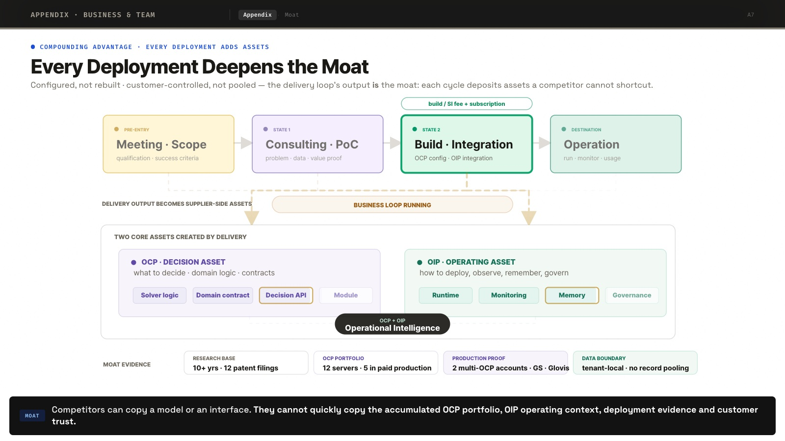
Slide text
Appendix · Business & TeamAppendix·MoatMoatCompetitors can copy a model or an interface. They cannot quickly copy the accumulated OCP portfolio, OIP operating context, deployment evidence and customer trust.